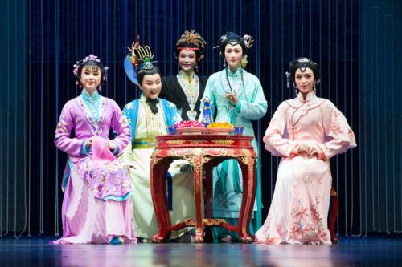

很难想象近100年前，越剧于江南的诞生，是怎样的一种奇迹。许是因了江南之水太多清丽柔美的滋润、江南之地太多烟雨岚风的漫漶，一出“小歌班”，几许半农半艺人，“绍兴文戏”的越剧便如三月里的桃花汛，在乌檐粉墙的江南，在鹂转莺啼、河埠纤道、家家枕河的江南恣意泛滥开来。一方水土养一方人，一方戏剧更浓缩着一方风情的灵魂和精华。粗犷厚朴的黄土地适宜于秦腔，茂密火红的高粱田孕育了二人转的品格，温山软水的江南无疑就是越剧千回百转的河流和湖泊。 不仅如此，越剧的诞生更在江枫渔火、烟柳画桥、自古便以阴柔为美的江南，大大延拓了观美、享美的疆域，构建了审美、赏美的磁场。同样是诞生于江南的戏剧，总以为昆曲的尊贵太精致而典雅，只迎合通儒硕彦、显绅名士作阳春白雪的把玩和潇洒；绍剧的阳刚又太浓烈而铺张，仅能为壮士侠客、忠臣武将作慷慨激昂的鼓噪和张扬；而滩簧的率性更粗犷，多适宜下里巴人的宣泄和戏耍。


什么叫越剧
 越剧 有第二国剧之称，也称绍兴戏，又被称为是“流传最广的地方剧种”，有观点认为是“最大的地方戏曲剧种。亦为中国五大戏曲剧种之一。越剧发源于绍兴嵊州，先后在杭州和上海发展壮大起来，流行于全国，流传于世界，在发展中汲取了昆曲、话剧、绍剧等特色剧种之大成，经历了由男子越剧到女子越剧为主的历史性演变。
越剧 有第二国剧之称，也称绍兴戏，又被称为是“流传最广的地方剧种”，有观点认为是“最大的地方戏曲剧种。亦为中国五大戏曲剧种之一。越剧发源于绍兴嵊州，先后在杭州和上海发展壮大起来，流行于全国，流传于世界，在发展中汲取了昆曲、话剧、绍剧等特色剧种之大成，经历了由男子越剧到女子越剧为主的历史性演变。
越剧的小特色
 越剧 长于抒情，以唱为主，声音优美动听，表演真切动人，唯美典雅，极具江南灵秀之气；多以“才子佳人”题材为主，艺术流派纷呈，公认的就有十三大流派之多。主要流行于：浙江、上海、江苏、福建、江西、安徽等广大南方地区，以及北京、天津等大部北方地区，鼎盛时期除西藏、广东、广西等少数省、自治区外，全国都有专业剧团存在。
越剧 长于抒情，以唱为主，声音优美动听，表演真切动人，唯美典雅，极具江南灵秀之气；多以“才子佳人”题材为主，艺术流派纷呈，公认的就有十三大流派之多。主要流行于：浙江、上海、江苏、福建、江西、安徽等广大南方地区，以及北京、天津等大部北方地区，鼎盛时期除西藏、广东、广西等少数省、自治区外，全国都有专业剧团存在。